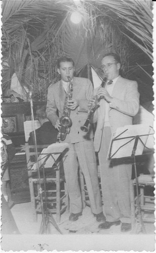
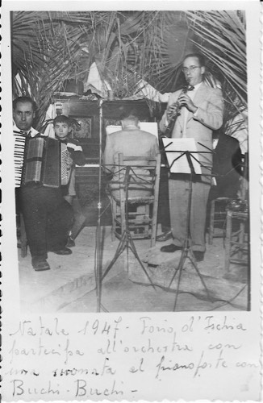

Giosue Enrico Agostino Mattera
Giosue Enrico Agostino Mattera
Media

Mattera Giosue 1947-1 Italy
Taken Dec 1947, Forio Ischia Italy. Giosue visited Ischia, met Romano Mussolini.
Written on back of photo:
“Picture with Romano Mussolini playing saxophone”
This is the photograph that was made the evening of 25 Dec 1947. Party to dance that was organized for period of Christmas to which participate also Romano Mussolini, in fact the we see back this postcard while plays the saxophone with cugino Giosue’ (dear cousin Joshua). Give this as memory of the visit to Italy.
Nello Calise 10-1-48
Written on back of photo:
“Picture with Romano Mussolini playing saxophone”
This is the photograph that was made the evening of 25 Dec 1947. Party to dance that was organized for period of Christmas to which participate also Romano Mussolini, in fact the we see back this postcard while plays the saxophone with cugino Giosue’ (dear cousin Joshua). Give this as memory of the visit to Italy.
Nello Calise 10-1-48


Mattera Giosue 1947-2 Italy
Taken Dec 1947 Forio Ischia Italy “Picture with Romano Mussolini playing piano”
Written on front:
Christmas 1947 Forio, Ischia
participates in orchestra with one played the piano with Buchi - Buchi
Back side
To dear cousin Joshua to remember your stay in Forio
Rag. Nello Calise
The wizard of Swing and Boogie-Woogie sits at the piano.
The American’s idea to perform your entire program.
Written on front:
Christmas 1947 Forio, Ischia
participates in orchestra with one played the piano with Buchi - Buchi
Back side
To dear cousin Joshua to remember your stay in Forio
Rag. Nello Calise
The wizard of Swing and Boogie-Woogie sits at the piano.
The American’s idea to perform your entire program.